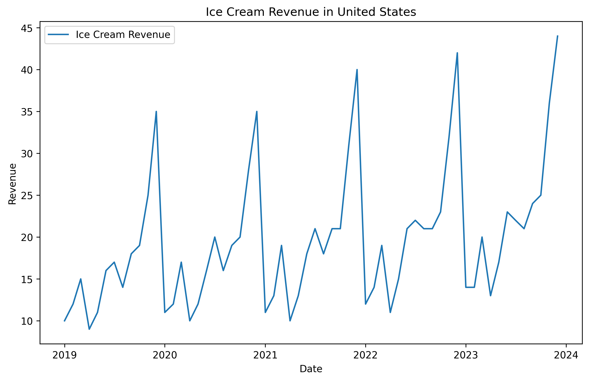
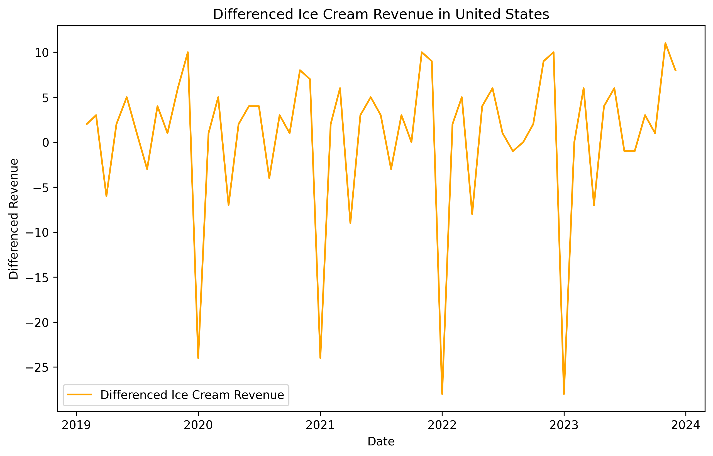
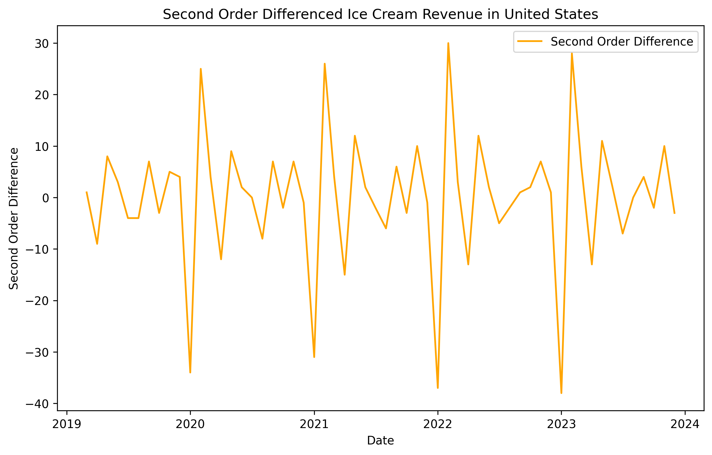
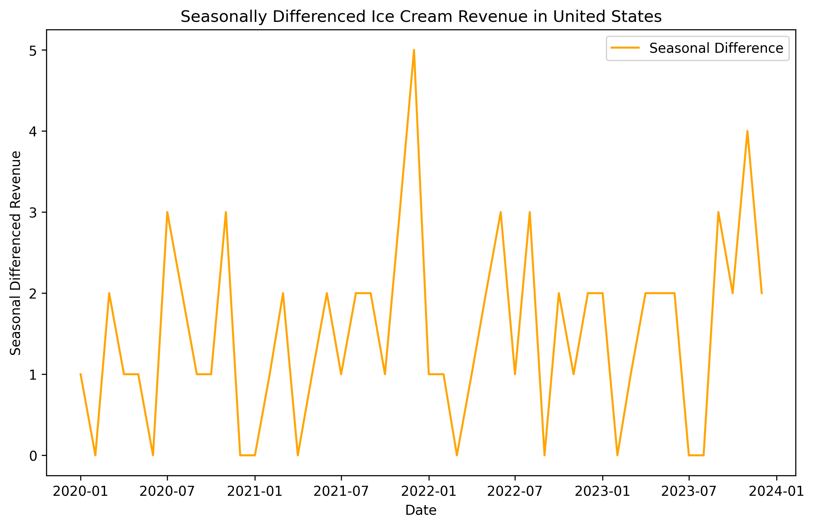
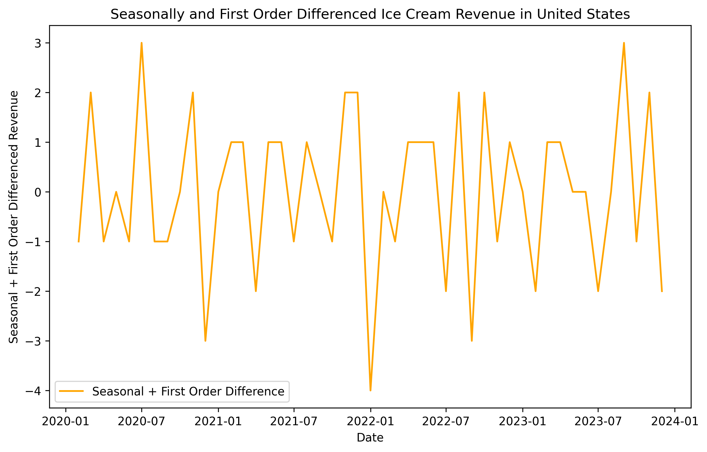

This post is part of the data cleaning chapter within a larger learning series around time series forecasting fundamentals. Check out the main learning path to see other posts in the series.
The example monthly data used in this series can be found here. You can also find the python code used in this post here.
Trends Are Hard
In the world of forecasting, many models need the trend component to be removed in order to learn the right signal from the data. The process of removing a trend (and sometimes seasonality) is called differencing. And differencing can make a time series become stationary.
Stationary just means that the time series has a constant mean and variance over time. Put simpler, it’s a time series that looks kind of random with no discernable trend or repeating seasonality. If a time series does have a trend, then we can remove it through a process called differencing, which involves subtracting a value in one time period from a value in a previous time period. More on this later.
Some models need data to be stationary to ensure it’s learning the correct relationships in the data, and doesn’t get fooled from thinking trends will always remain the same.
Let’s take a look at one of our time series. Does it look like it has a constant mean and variance over time?

Hmmm, not really. Seems like there is an upward trend to the data. This means that the mean over time will also rise. It probably also has a slightly growing variance. Meaning the year over year growth amount is getting bigger and bigger. Let’s see what we can do to make this data stationary through differencing.
Types of Differencing
There are two main types of differencing. The first is simply taking the difference between two consecutive periods. For example taking the sales in December and subtracting the sales in November (previous month). This is called first order differencing. Let’s try that on our time series and see what happens.

Ok it’s looking a lot better! Our data is centered around zero, and doesn’t seem to be growing in magnitude over time. Seems like it could be stationary! Another way to apply differencing is by doing it twice, this is called second order differencing. You start by doing a first order difference, then do that same process again on that data. So instead of ending up with the change from period to period. You have the change of the change from period to period.
- A first order difference measures the change in position over time, which is like velocity
- A second order difference measures the rate of change of the rate of change, which is like acceleration (the change in velocity over time)
Taking a second order difference is done when the time series still doesn’t have constant mean or variance. Let’s take a second order difference of our example time series.

Things changed a little, but not much. Seems like a second order difference may not always be necessary. The final way to difference your time series is through seasonal differencing. This is the difference between an observation and the previous observation from the same season. For example with monthly sales, a season difference would be taking the difference between a month this year and the same month in the previous year. Taking a seasonal difference removes most seasonality in the data, hence the name. Let’s see how our data looks by just taking a seasonal difference.

The seasonal difference result looks good. Constant mean and variance throughout time. You can also combine both standard differencing with seasonal differencing. If your data has some seasonality, it’s best to do the seasonal difference first, then take the first order difference after. Let’s see how it looks.

We now have a nice mean around zero and no major variance throughout the data. Nice! But how the heck do we know if the data is stationary once we difference it?
Checking if Your Data is Stationary
In order to check if the data is stationary, either the original data or data that’s been differenced, you can use something called a unit root test. Specially a Kwiatkowski-Phillips-Schmidt-Shin (KPSS) test. This kind of test runs a few statistical processes and lets you know if the data it was fed was stationary or not. We can take this once step further by leveraging tools that build on this test and tell you how many differences should be applied on your data.
Let’s try running this test on our data and see how many differences we might need to make the data stationary.
- First order difference: stationary ✅
- Second order difference: stationary ✅
- Seasonal difference: stationary ✅
- Seasonal and first order difference : stationary ✅
Sweet! All of our differencing techniques each resulted in our data being stationary. It’s a good idea to pick the method that is the simplest way to get a stationary time series, which in our case is the first order difference. So we can use that going forward when training models.
Back Transformations
After you train a model and produce a forecast, the work is still not done. That forecast is the predicting the change between periods, not the actual values for that period. In order to get a final forecast we can use we need to transform that data back to the original units.
To do this we need all original values of the time series. When we difference our data, the process creates missing values at the start of the time series, because we cannot calculate the difference of the first period of the data since it’s the first period of the data. So a first order difference has one missing value at the start of the time series, a second order difference has 2, and a seasonal difference has many more depending on the seasonal periods in the data.
To get our final forecast we need to keep these original values, add them back to the differenced data, then start to add them up one by one. For a first order difference, that just means taking that original value in the first period, adding it to the differenced value in the second period, then adding that new value to the differenced value in the third period, and so on. It’s a daisy chained process to get the original data back. We carry this math forward into the future with our predictions, with the final output being our finished forecast!
Here’s a super simple table breaking this down.
| Month | Original Series (Yₜ) | 1st Order Difference (ΔYₜ = Yₜ - Yₜ₋₁) | Transformed Back to Original Units |
|---|---|---|---|
| Jan 2024 | 100 | — | — |
| Feb 2024 | 105 | +5 | — |
| Mar 2024 | 108 | +3 | — |
| Apr 2024 | 112 | +4 | — |
| May 2024 | 115 | +3 | — |
| Jun 2024 | 118 | +3 | — |
| Forecast | |||
| Jul 2024 | — | +3 (forecasted) | 121 (118 + 3) |
| Aug 2024 | — | +3 (forecasted) | 124 (121 + 3) |
| Sep 2024 | — | +3 (forecasted) | 127 (124 + 3) |
Reversal
Not all models need data to be stationary. Harder for model interpretability, especially double differencing. Differencing removes historical data, especially seasonal.